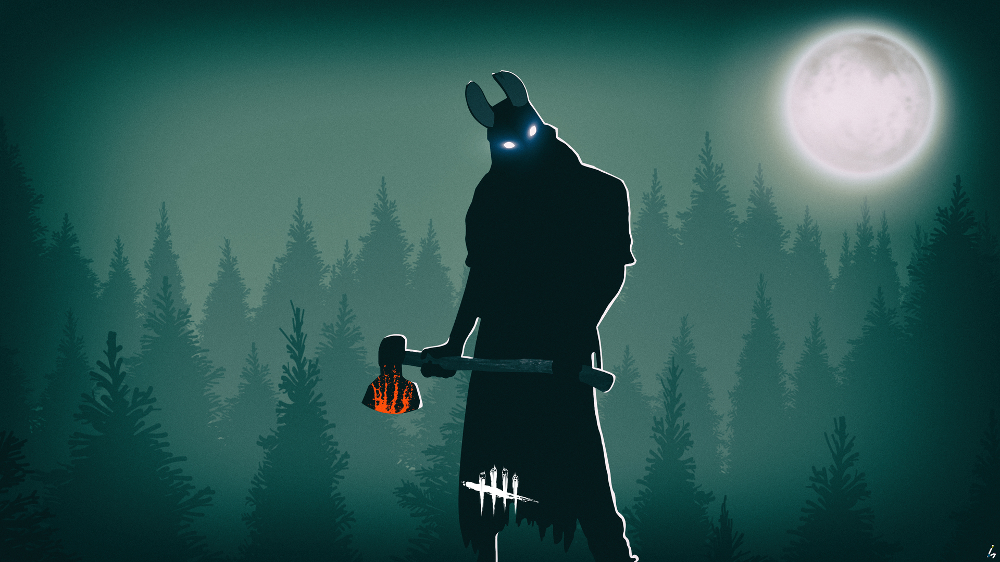
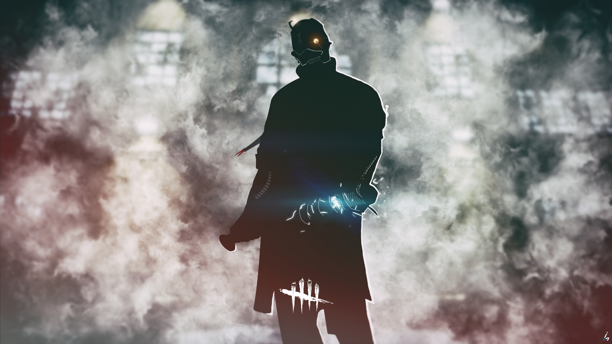

Pada awal tahun 2016, penggemar game horror mendapatkan banyak kejutan dan salah satunya adalah kabar tentang game Friday The 13th: The Game yang akan segera dirilis. Tapi game tersebut bukanlah satu satunya kabar baik pada awal tahun ini. Developer Behaviour dan publisher Starbeerze Games dikabarkan sedang dalam proses pembuatan game terbaru mereka, Dead by Daylight yang menggabungkan nuansa horror dari Friday The 13th: The Game dan Until Dawn. Berikut ulasannya.
Proyek terbaru dari Behaviour tersebut bernama Dead By Daylight, dan walaupun belum begitu banyak informasi tentang game tersebut, Behaviour telah memberikan banyak update lewat video diary developer mereka. Sekilas game ini terlihat menyerupai Until Dawn dimana sekelompok orang harus menghadapi seorang pembunuh, namun, hal yang membedakannya adalah pembunuhnya akan menggunakan sudut pandang orang pertama sedangkan semua orang yang harus menyelamatkan diri menggunakan sudut pandang orang ketiga.
Hal tersebut akan membuat pemainnya yang berperan sebagai pembunuh dapat lebih mudah melihat sekelilingnya sementara pemain lain harus menggunakan perspektif yang berbeda untuk dapat bersembunyi. Teknik seperti ini dapat dibilang baru untuk game dengan genre slasher, dimana pemain yang bersembunyi harus sangat memperhatikan kondisi sekelilingnya untuk terhindar dari jarak pandang pembunuhnya yang lebih luas.
Game dengan genre slasher seperti ini memang dapat dibilang sangat jarang muncul, mungkin salah satu alasannya karena kesulitan developernya untuk membuat sebuah cerita yang menarik untuk dimainkan. Salah satu game dengan genre slasher adalah Last Year, namun, game tersebut lebih menekankan unsur kerjasama antar pemainnya untuk dapat mengalahkan pembunuh yang mengejar mereka. Menurut diary tersebut, dalam Dead By Daylight pemainnya dapat saling bekerjasama untuk menyelamatkan diri mereka lalu mereka akan mendapatkan hadiah sesuai dengan keberhasilan mereka, namun, yang membedakan game tersebut dengan Last Year adalah kemampuan pemainnya untuk menyelamatkan diri mereka sendiri atau bertahan hidup dengan mengorbankan orang lain. Walaupun terlihat sedikit sadis, tapi dalam situasi tertentu ada yang harus dikorbankan demi hal lain yang jauh lebih besar.
Kelihatannya Dead By Daylight akan banyak memberikan pemainnya pilihan moral yang cukup berat, apakah kamu akan mengorbankan orang lain demi keselamatan diri kamu sendiri atau mencari cara untuk menyelamatkan semua orang yang kamu temui. Jika kamu pernah menyaksikan sebuah film horror, maka kamu pasti mengetahui bahwa menjadi seorang pahlawan bukanlah jalan terbaik yang dapat diambil. Hal itulah yang membuat game ini sangat menarik untuk dimainkan, kamu dapat merasakan apa yang terjadi dalam film horror dan harus menentukan pilihan yang tidak mudah untuk diambil.
Perkembangan teknologi yang sangat cepat telah memberikan banyak developer kemampuan untuk mengembangkan game dengan alur cerita yang setara dengan film Hollywood, dan berkat kemampuan itulah Behaviour dapat membuat Dead By Daylight seperti sebuah film slasher Hollywood.